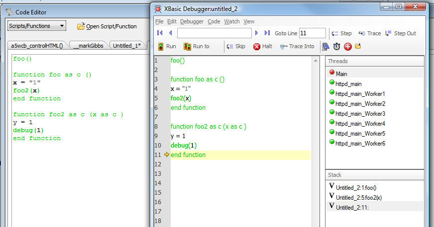
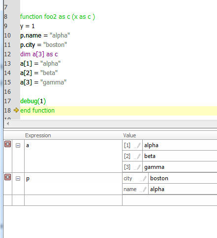
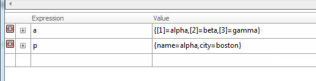
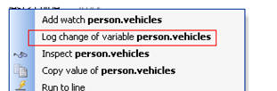
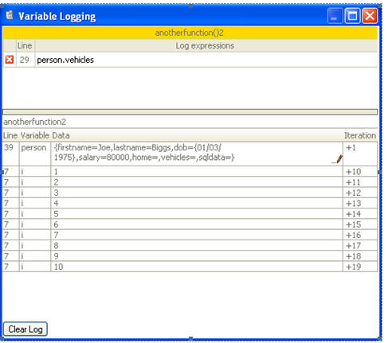
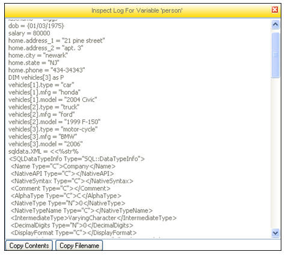
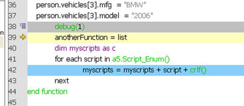
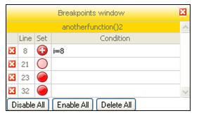
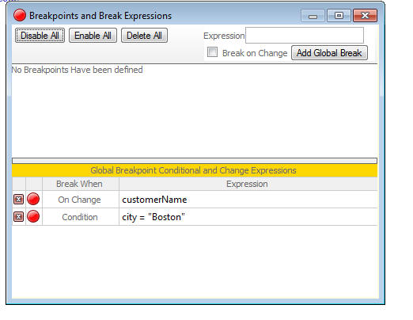
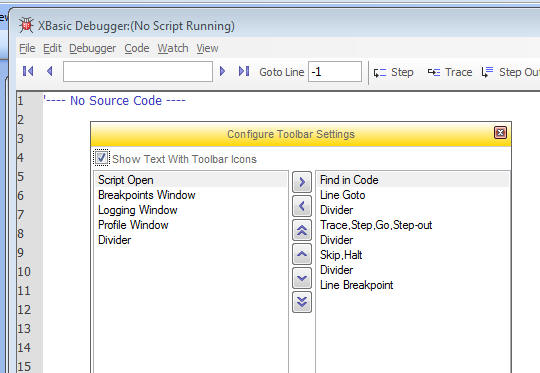

Debugger Features
The debugger has been completely rewritten. Many new features have been added. It is now substantially faster and it will dramatically increase your productivity when you are debugging your Xbasic code.
Examine Variables
You can now examine a variable in your script by simply hovering the mouse over the variable. The window will go away when you click the mouse on the debugger background. You can also drag this window into the Watch window to add the variable to the Watch list. You can also double click on a variable to quickly add it to the Watch window.
In this example, the mouse is hovering over 'p2'. The pop-up window can be locked by clicking on the icon on the top right. You can edit values in the running script by clicking on the pencil icon. You can navigate up and down in dot variables by clicking on the 'bread crumbs' in the title bar.

Thread Window
The Thread window allows debugging of background threads. The window displays a list of running threads. Use this to debug scripts that use the thread_create() function. You can hold the mouse over an entry in the Thread Window to see the call stack for that thread.
Stack Window
Allows you to see the Xbasic stack (i.e. the list of prior functions that have been called). You can hold you mouse over the icon to the left of each entry to see the variables at that level of the stack.
This simplistic example shows a script that calls a function foo(), which in-turn calls another function foo2(). We set a break point inside foo2() so the Stack window shows foo() and foo2() on the stack.
Watch Window
- allows inspection of property variables, arrays and collections.
- allows navigation around property variables and arrays. Includes 'return to parent' button.
- has 'quick-delete' button on far left.
- persist watch variables from one debugging session to the next.
- save watch variables to a file and restore from a file (see top level Watch menu command).
This image shows how an array and a dot variable can be examined in the Watch window. Notice that the array has been expanded to show all of the array entries. The dot variable has also been expanded to show its properties. The next image shows how these variables appear in the Watch window in their collapsed state.


Log Window
You can log changes to a variable during the progression a script. To turn on the feature, right click on a variable and select the 'Log change' menu item.

To open the Log Window, select the View menu.

Notice that the top of the Log window is an outline of scripts, list of line numbers and expressions to log. The log line can contain multiple expressions. You simply need to separate the entries with a comma - e.g. "i,list" to log changes in both the 'i' and 'list' variable on the given line,
In the lower pane, the currently logged values are shown. If the content is non-trivial (i.e. bigger than 128 characters, including CR-LF characters, or if it is a property variable) - then an external 'link' (a pencil icon) is provided to inspect it. The link is to an external file in the log folder (which is inside the temp folder).
In the above example, clicking on the pencil icon for the 'person' variable will bring up this window:

Profiler
You can now profile a section of code. Previously profiling was only available by inserting profiler_begin()/profiler_end() Xbasic commands into your code. You can now right click on any line of code and select the Begin Profiling or End Profiling command.
To examine the profiling output, select the Profiling Window from the View menu.
Real time comment-out
You can now comment out certain lines of code in your script while you are debugging by right clicking on a line and selecting the Comment out line command. The debugger shows an icon next to the commented out line. In the screenshot below, the debug(1) command has been commented out.

Edit Breakpoint Window
You can now edit all breakpoints in your debugging environment from a single window. You can also assign conditions to breakpoints. For example, the screenshot below shows that the breakpoint on line 8 will trigger when the variable, 'i' is equal to 8.
You can also disable breakpoints (rather than removing them entirely).

Conditional Breakpoints and Global Breakpoints
Conditional breakpoints allows you set a condition expression for a breakpoint that you have set in your code, or for a global breakpoiont. The breakpoint will only be triggered if the condition is true. To set a condition for a breakpoint, right click on the breakpoint in the Script Window and select the Edit Breakpoint command. This will open the Edit Breakpoint Window where you can set a logical condition for the breakpoint. Notice that the icon for conditional breakpoints changes to a red ball with a while plus sign in it.
A global breakpoint allows you to break the running script when an expression's value changes, or when an expression is true. This is extremely useful if you want to find out where a particular variable in your code is getting changed, or set to a certain value, and you are not sure which line of code is changing the variable.
To set a global breakpoint, open the Breakpoint Window, type an expression into the Expression box and then click the Add Global Break button. If you want to break when the expression changes value (as opposed to when a particular condition is true), check the Break on Change box before you click the Add Global Break button.
In the image shown below, you see two global breakpoints. The first entry causes the running script to break when the value of the variable 'customerName' changes. The second breakpoint causes the running script to break when the expression 'city="Boston"' becomes true.

Configuring the Toolbar
You can configure the buttons on the Debugger toolbar. To do this, select View, Configure Toolbar command.

Debugger - Avoid Scrolling
New option in the Debugger, Settings menu. Normally the debugger scrolls the code window to try to make the line with focus appear in the center of the code window. If you check this option, the debugger will not scroll the code in an attempt to center it.
Debugger - 'Run to Line' Behavior
In the prior builds, the 'Run to line' command set a temporary breakpoint, but allowed all other breakpoints, and the debug(1) command to cause a break before the specified line was reached. Now Alpha Five also temporarily disables all breakpoints in the Xbasic code until the breakpoint is hit. So, for example, so if you right click on line 100 of a script and select 'Run to line', the debugger will actually execute to that line (unless an error is encountered), ignoring all the breakpoints you might have set between the current line in the script, and line you right-clicked on.